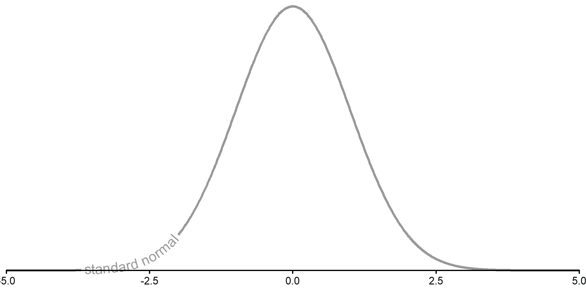
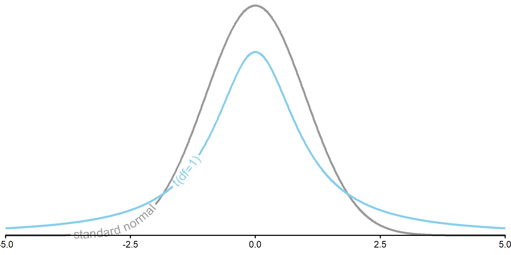
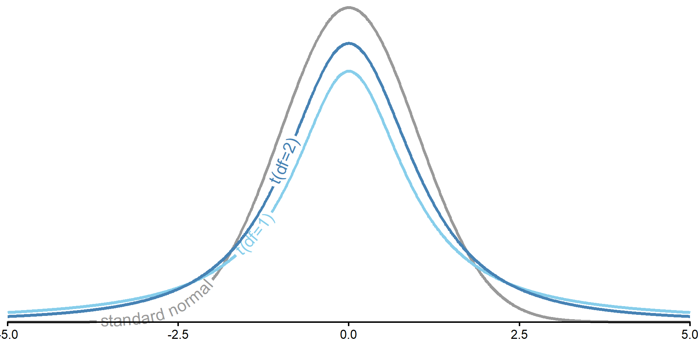
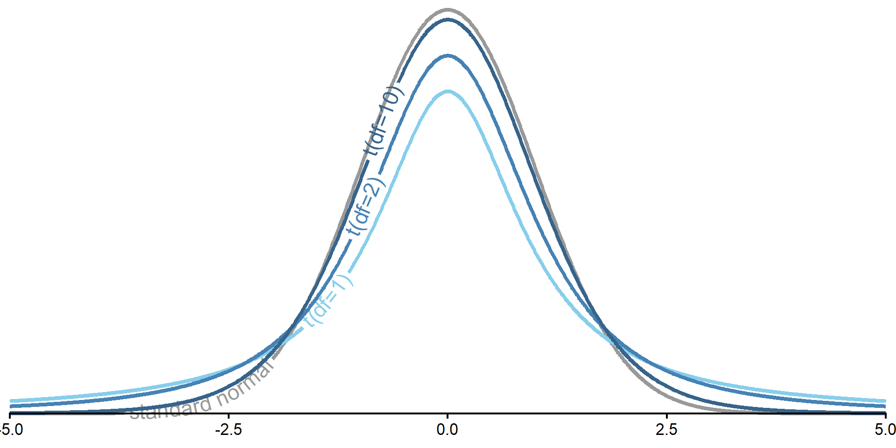
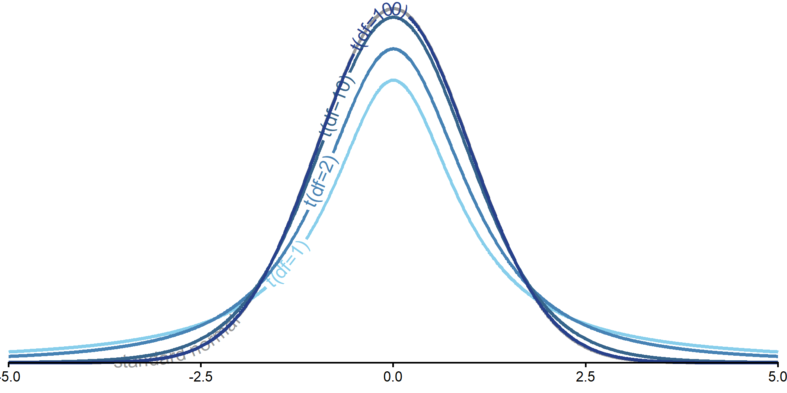
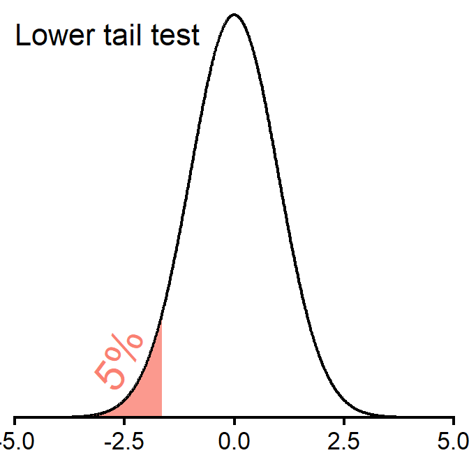
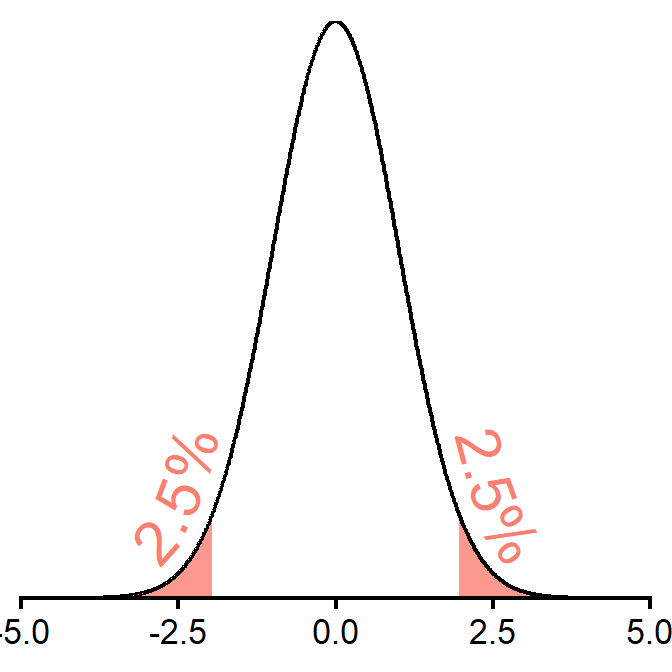
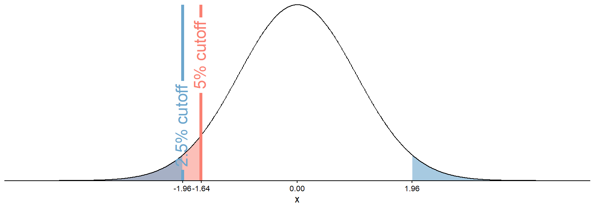

| STEM | Social Sciences | Humanities | Arts | Business | |
|---|---|---|---|---|---|
| Expected | |||||
| Observed |
Chi-Squared Tests and T-Tests
PSYC 6019-A01 / PSYC 6022-A01
2025-09-18 | Lab 4
Jess Helmer
Outline
- \(\chi^2\) tests
- t-tests
Chi-Squared Tests
Chi-Squared (\(\chi^2\)) Test
Testing inferences about proportions
○ Involve categorical variables
Comparing observed frequencies (counts) to some expected (null hypothesis) frequencies
\(\chi^2\) Test of Goodness of Fit: expected frequencies are set by researcher (e.g., null hypothesis is equal frequencies across all groups)
\(\chi^2\) Test of Independence: expected frequencies are those implied by independence
Chi-Squared (\(\chi^2\)) Test
Instead of a continuous variable, our outcome is a count
Continuous
Height
Petal length
Test score
Counts
Coin flip being heads
Number of pets
Goals scored
Only integers
\(\chi^2\) Test of Goodness of Fit
\(\chi^2\) Test of Goodness of Fit
Do the observed frequencies of a categorical variable differ from what expected a priori?
Typically, this expectation is equal occurrence across groups (but doesn’t have to be).
If equal occurrence, what would be our expected frequencies?
100 coin flips
| Heads | Tails |
|---|---|
| 50 | 50 |
Favorite primary color of 33 students
| Red | Blue | Yellow |
|---|---|---|
| 11 | 11 | 11 |
Can also hypothesize proportions and convert to frequencies once you have a sample size.
\(\chi^2\) Test of Goodness of Fit: Hypotheses
\(H_0\): Observed data match the expected frequencies for the population
\(H_1\): Observed data do not match the expected frequencies for the population
○ Observed frequency is significantly different than expected
\(H_0\): \(\pi_j = \pi_{j_0}\) for all categories \(j\) (i.e., difference for all categories is 0), where
\(\pi_j\) = observed proportion
\(\pi_{j_0}\) = expected proportion
\(H_1\): \(\pi_j \neq \pi_{j_0}\) for any category \(j\)
\(\chi^2\) Test of Goodness of Fit
\[ \chi^2 = \sum_{j=1}^{J} \frac{(O_j – N\pi_{j_0})^2}{N\pi_{j_0}} = \sum_{j=1}^{J} \frac{(O_j – E_j)^2}{E_j} \]
where
\(O_j\) = observed frequency
\(N\) = total sample size
\(E_j\) = expected frequency
\(j\) = individual category out of \(J\) total categories
The sum of the squared differences between the observed and expected frequencies, divided by the expected frequency, for each group.
\(\chi^2\) Test of Goodness of Fit
\(\text{df} = J - 1\), where
\(J\) = number of categories
Use to identify critical \(\chi^2\) value from \(\chi^2\) table, R, etc.
For \(\chi^2\), as \(\text{df}\) increases, so does the critical-\(\chi^2\) value (at same \(\alpha\))
Only ever a one-tailed test! For the upper end of the distribution.
\(\chi^2\) Distribution

\(\chi^2\) Distribution

\(\chi^2\) Distribution

\(\chi^2\) Distribution

\(\chi^2\) Distribution

\(\chi^2\) Distribution

\(\chi^2\) Test of Goodness of Fit Example
You are an education psychologist interested in college students’ choice of majors. You’ve grouped majors into five categories: STEM, Social Sciences, Humanities, Arts, and Business. You’d like to test whether there are differences in the population of students choosing those majors. You sample 100 students and ask what major they chose.
First, what are your expected frequencies for each category?
\(\chi^2\) Test of Goodness of Fit Example
You are an education psychologist interested in college students’ choice of majors. You’ve grouped majors into five categories: STEM, Social Sciences, Humanities, Arts, and Business. You’d like to test whether there are differences in the population of students choosing those majors. You sample 100 students and ask what major they chose.
First, what are your expected frequencies for each category?
| STEM | Social Sciences | Humanities | Arts | Business | |
|---|---|---|---|---|---|
| Expected | 20 | 20 | 20 | 20 | 20 |
| Observed |
\(\chi^2\) Test of Goodness of Fit Example
You are an education psychologist interested in college students’ choice of majors. You’ve grouped majors into five categories: STEM, Social Sciences, Humanities, Arts, and Business. You’d like to test whether there are differences in the population of students choosing those majors. You sample 100 students and ask what major they chose.
Next, what is your \(\chi^2\) cutoff value?
| STEM | Social Sciences | Humanities | Arts | Business | |
|---|---|---|---|---|---|
| Expected | 20 | 20 | 20 | 20 | 20 |
| Observed |
\(\chi^2\) Test of Goodness of Fit Example
Cutoff in R
df <- 5 - 1
chisq_crit <- qchisq(.95, df)
chisq_crit[1] 9.487729\(\chi^2\) Test of Goodness of Fit Example
You are an education psychologist interested in college students’ choice of majors. You’ve grouped majors into five categories: STEM, Social Sciences, Humanities, Arts, and Business. You’d like to test whether there are differences in the population of students choosing those majors. You sample 100 students and ask what major they chose.
Here are the observed values:
| STEM | Social Sciences | Humanities | Arts | Business | |
|---|---|---|---|---|---|
| Expected | 20 | 20 | 20 | 20 | 20 |
| Observed | 65 | 10 | 5 | 5 | 15 |
\(\chi^2\) Test of Goodness of Fit Example
\[ \chi^2 = \sum_{j=0}^{J} \frac{(O_j – N\pi_j)^2}{N\pi_j} = \sum_{j=0}^{J} \frac{(O_j – E_j)^2}{E_j} \]
obs_chisq <- (65 - 20)^2 / 20 +
(10 - 20)^2 / 20 +
(5 - 20)^2 / 20 +
(5 - 20)^2 / 20 +
(15 - 20)^2 / 20
obs_chisq[1] 130obs_chisq > chisq_crit[1] TRUEWe can reject the null in favor of the alternative that the number of students is not the same across majors.
R Function
major_data <- tibble(
major = c("STEM", "Social Sciences", "Humanities", "Arts", "Business"),
observed = c(65, 10, 5, 5, 15)
)
chisq <- major_data |>
select(observed) |>
chisq.test()
chisq
Chi-squared test for given probabilities
data: select(major_data, observed)
X-squared = 130, df = 4, p-value < 2.2e-16chisq$expected[1] 20 20 20 20 20chisq$statisticX-squared
130 chisq$p.value[1] 3.89406e-27\(\chi^2\) Test of Goodness of Fit Example
Let’s restart and say that you were a educational psychologist interested in how students in STEM schools choose their major. In this situation, you had expected more students to select a STEM major than other majors.
These are your new expected frequencies (60% STEM, evenly divided across the rest):
| STEM | Social Sciences | Humanities | Arts | Business | |
|---|---|---|---|---|---|
| Expected | 60 | 10 | 10 | 10 | 10 |
| Observed | 65 | 10 | 5 | 5 | 15 |
R Function
chisq.test(x = c(65, 10, 5, 5, 15),
p = c(60, 10, 10, 10, 10),
rescale.p = T)
Chi-squared test for given probabilities
data: c(65, 10, 5, 5, 15)
X-squared = 7.9167, df = 4, p-value = 0.09468chisq.test(x = c(65, 10, 5, 5, 15),
p = c(.60, .10, .10, .10, .10))
Chi-squared test for given probabilities
data: c(65, 10, 5, 5, 15)
X-squared = 7.9167, df = 4, p-value = 0.09468○ x = data of frequencies
○ p = expected probabilities
○ rescale.p = [T/F], will rescale p to probabilities if you prefer to input frequencies
\(\chi^2\) Test of Independence
\(\chi^2\) Test of Independence
Do the observed frequencies of a categorical variable differ from what expected via properties of independence?
○ Now considering more than one type of category
○ E.g., Number of pets by cat vs. dog people and undergrad vs. post-graduate
| Cat Person | Dog Person | |
|---|---|---|
| Undergrad | ||
| Post-Graduate |
Expected frequencies calculated from the marginal totals of the contingency table
○ Expected values determined from data
\(\chi^2\) Test of Independence: Hypotheses
\(H_0\): Categorical Variable 1 and Categorical Variable 2 are independent (i.e., have no association)
\(H_1\): Categorical Variable 1 and Categorical Variable 2 are not independent (i.e., have some association)
○ Do expected frequencies match those expected via independence?
Mathematically the same as before:
\(H_0\): \(\pi_j = \pi_{j_0}\) for all categories \(j\); difference for all categories is 0, where
\(\pi_j\) = observed proportion
\(\pi_{j_0}\) = expected proportion
\(H_1\): \(\pi_j \neq \pi_{j_0}\) for any category \(j\)
Just changing the expected frequencies
\(\chi^2\) Test of Independence
\[ \chi^2 = \sum_{j_1=1}^{J_1}\sum_{j_2=1}^{J_2} \frac{(O_j – N\pi_{j_0})^2}{N\pi_{j_0}} = \sum_{j_1=1}^{J_1}\sum_{j_2=1}^{J_2} \frac{(O_j – E_j)^2}{E_j} \]
Basically identical formula to calculate the \(\chi^2\).
The difference is that our expected frequencies \(E_j\) are derived from the data. Just like before, we calculate the difference from each cell, but now we have two categories that make up the cell.
The sum of the squared differences between the observed and expected frequencies, divided by the expected frequency, for each cell.
\(\chi^2\) Test of Independence Cutoffs
What is the critical \(\chi^2\) value in a test of independence for a 3x2?
\(\text{df} = (J_1 - 1) \times (J_2 - 1)\) or
\(\text{df} = (n_{rows} - 1) \times (n_{cols} - 1)\)
\(\chi^2\) Test of Independence Example
You are another educational psychologist, and you’re interested in examining your department’s student body makeup. You wonder whether there is an association between students’ level (graduate vs. undergraduate) and whether they are an in-state student or not. You sample 50 students from your department, and these are the frequencies you observe.
| In-State | Out-of-State | |
|---|---|---|
| Undergrad | 25 | 10 |
| Graduate | 5 | 10 |
First, what are your expected frequencies for each category?
Calculating Expected Frequencies
First, get the marginal totals for each column
| In-State | Out-of-State | Total | |
|---|---|---|---|
| Undergrad | 25 | 10 | |
| Graduate | 5 | 10 | |
| Total |
Calculating Expected Frequencies
First, get the marginal totals for each column
| In-State | Out-of-State | Total | |
|---|---|---|---|
| Undergrad | 25 | 10 | 35 |
| Graduate | 5 | 10 | 15 |
| Total | 30 | 20 | 50 |
Calculating Expected Frequencies
| In-State | Out-of-State | Total | |
|---|---|---|---|
| Undergrad | 25 | 10 | 35 |
| Graduate | 5 | 10 | 15 |
| Total | 30 | 20 | 50 |
| In-State | Out-of-State | Total | |
|---|---|---|---|
| Undergrad | 21 | 14 | 35 |
| Graduate | 9 | 6 | 15 |
| Total | 30 | 20 | 50 |
Expected cell frequency = \(E_j\) = \(\frac{\text{column total} \times \text{row total}}{N}\)
○ Undergrad & In-State = \(\frac{35 \times 30}{50} = 21\)
○ Undergrad & Out-of-State = \(\frac{35 \times 20}{50} = 14\)
○ Graduate & In-State = \(\frac{15 \times 30}{50} = 9\)
○ Graduate & Out-of-State = \(\frac{15 \times 20}{50} = 6\)
\(\chi^2\) Test of Independence Example
\[ \chi^2 = \sum_{j=0}^{J} \frac{(O_j – N\pi_j)^2}{N\pi_j} = \sum_{j=0}^{J} \frac{(O_j – E_j)^2}{E_j} \]
# A tibble: 3 × 4
type in_state out_of_state Total
<chr> <dbl> <dbl> <dbl>
1 Undergrad 25 10 35
2 Graduate 5 10 15
3 Total 30 20 50chisq_crit <- qchisq(.95, df = (2 - 1) * (2 - 1))
chisq_crit[1] 3.841459obs_chisq <- (25 - 21)^2 / 21 +
(10 - 14)^2 / 14 +
(5 - 9)^2 / 9 +
(10 - 6)^2 / 6
obs_chisq[1] 6.349206obs_chisq > chisq_crit[1] TRUE\(\chi^2\) Test of Independence R Function
# A tibble: 2 × 3
type in_state out_of_state
<chr> <dbl> <dbl>
1 Undergrad 25 10
2 Graduate 5 10studdat |>
select(-type) |>
chisq.test(correct = F)
Pearson's Chi-squared test
data: select(studdat, -type)
X-squared = 6.3492, df = 1, p-value = 0.01174○ correct = [T/F], applies a “continuity correction” to the \(\chi^2\) value. Default is T.
We can reject the null in favor of the alternative that students’ level (graduate vs. undergraduate) and whether they are an in-state student or not are not independent.
From Z to T: No longer normal
Z- vs. T-Distribution
T-distribution has thicker tails
As df increases, it looks more like a standard normal distribution
With df = \(\infty\), exactly follows a normal distribution (so approximates with large df)
Z- vs. T-Distribution

Z- vs. T-Distribution

Z- vs. T-Distribution

Z- vs. T-Distribution

Z- vs. T-Distribution

T-Test: How many tails?
Need to consider whether to use a “one-tail” or “two-tail” t-test.
One-Tail (One-Sided)
We want to test whether something is lower or higher than a value, but not both
Only one limit
Two-Tails (Two-Sided)
We want to test whether something is either lower or higher than a value
Two limits
Testing: How many tails?
Need to consider whether to use a “one-tail” or “two-tail” t-test.
One-Tail (One-Sided)

Two-Tails (Two-Sided)

Testing: How many tails?
Notice that two-tailed tests are harder to “beat.”

One-Sample T-Test Generally
Asks “is there a question between our sample and the population?”
Derived with sample mean (\(\bar{x}\)), population mean (\(\mu\)), and standard error (\(\frac{s}{\sqrt n}\))
\[t = \frac{\bar{x} - \mu}{\frac{s}{\sqrt{n}}}\]
With a t-test, we don’t have a known population SD (\(\sigma\)), so we use the SD we observe in our sample \(s\)
Get our t-statistic and compare it to a critical t cutoff value
T-Test Example
Let’s say a researcher claims the average highway miles per gallon across all cars is 30mpg. They collect a sample of 234 cars and would like you to test this. We do not know the population standard deviation.
One- or two-tailed?
Our observed t-statistic exceeds our cutoff t-statistic, so we reject the null.
T-Test Function
Alternatively, we can use t.test(x)
○
x = vector of numeric data
○
mu = hypothesized population mean (default is 0)
○
alternative = one of "two.sided", "less", "greater" (default is "two.sided")
t.test(mpg$hwy, mu = 30, alternative = "two.sided")
One Sample t-test
data: mpg$hwy
t = -16.852, df = 233, p-value < 2.2e-16
alternative hypothesis: true mean is not equal to 30
95 percent confidence interval:
22.67324 24.20710
sample estimates:
mean of x
23.44017 We see a significant difference between our observed sample mean and our hypothesized population mean.
T-Test Example
Let’s say a different researcher claims the average city miles per gallon across all cars is 30mpg. They collect a sample of 234 cars You are confident they are wrong—you think it is certainly less than that. We do not know the population standard deviation.
One- or two-tailed?
t.test(mpg$cty, mu = 30, alternative = "less")
One Sample t-test
data: mpg$cty
t = -47.233, df = 233, p-value < 2.2e-16
alternative hypothesis: true mean is less than 30
95 percent confidence interval:
-Inf 17.31843
sample estimates:
mean of x
16.85897 We see a significant difference between our observed sample mean and our hypothesized population mean.
T-Test Example Output
hwy_ttest <- t.test(mpg$cty, mu = 30)
hwy_ttest
One Sample t-test
data: mpg$cty
t = -47.233, df = 233, p-value < 2.2e-16
alternative hypothesis: true mean is not equal to 30
95 percent confidence interval:
16.31083 17.40712
sample estimates:
mean of x
16.85897 #?t.testhwy_ttest$statistic t
-47.23252 hwy_ttest$p.value[1] 2.581229e-121hwy_ttest$conf.int[1] 16.31083 17.40712
attr(,"conf.level")
[1] 0.95Can use these in Quarto documents with inline R chunks.
T-Statistic Cutoffs
Say you want to find the cutoff t values: \(t(\text{df}=3)\) and \(t(\text{df}=37)\) for \(\alpha = .05\), both upper one-tailed and two-tailed.
Which will have the larger magnitude cutoff values?
One-Tailed
All of our \(\alpha = .05\) goes on the upper side
Need a cutoff for \(.95\)
\(t_{crit}(\text{df}=3) = 2.35\)
\(t_{crit}(\text{df}=37) = 1.69\)
Two-Tailed
\(\alpha = 1 - .95 = 5\%\) on both sides
So \(.05 / 2 = .025\) on each side
Need value for \(.025\) and \(.95 + .025\) (\([.025, .975]\))
[1] -3.182446 3.182446[1] -2.026192 2.026192\(t_{crit}(\text{df}=3) = [-3.18, 3.18]\)
\(t_{crit}(\text{df}=37) = [-2.03, 2.03]\)
Types of T-Tests

Independent Sample T-Test
Might want to compare two samples of observations
○ Post-graduation salaries of GT vs. UGA grads
○ Treatment vs. control group
○ Cats vs. dogs
We can represent each group with their mean on some outcome and compare the means
Consider whether the mean difference is significant but also have to account for different levels of variability within group
Independent Sample T-Test: Pooled SD
Need to pool the sample SDs while noting different sample sizes
\[ s_p^2 = \frac{(n_1 - 1) s_1^2 + (n_2 - 1) s_2^2}{(n_1 - 1) + (n_2 - 1)} = \frac{(n_1 - 1) s_1^2 + (n_2 - 1) s_2^2}{n_1 + n_2 - 2}\]
Independent Sample T-Test: Pooled SD
Note that when sample size is equal (i.e., \(n_1 = n_2 = n\)),
\[\begin{array}{ll}
s_p^2 \bigg|_{n_1 = n_2 = n} & = \frac{(n - 1) s_1^2 + (n - 1) s_2^2}{(n - 1) + (n - 1)} = \frac{(n - 1) (s_1^2 + s_2^2)}{(n - 1) + (n - 1)} \\[0.6em]
& = \frac{(n - 1) (s_1^2 + s_2^2)}{2(n - 1)} = \frac{s_1^2 + s_2^2}{2}
\end{array}\]
Square root to get back to standard deviation
\[ s_p = \sqrt{s_p^2} = \sqrt{\frac{(n_1 - 1) s_1^2 + (n_2 - 1) s_2^2}{(n_1 - 1) + (n_2 - 1)}} = \sqrt{\frac{(n_1 - 1) s_1^2 + (n_2 - 1) s_2^2}{n_1 + n_2 - 2}} \]
Independent Sample T-Test: Test statistic
\[ t = \frac{\bar{x}_1 - \bar{x}_2}{\sqrt{\frac{s_p^2}{n_1} + \frac{s_p^2}{n_2}}} = \frac{\bar{x}_1 - \bar{x}_2}{s_p\sqrt{\frac{1}{n_1} + \frac{1}{n_2}}}\]
Compare against critical t-value with df = \((n_1 - 1) + (n_2 - 2)\)
Independent Sample T-Test: R Calculation
summary(ice_cream_sales) flavor sales
Length :40 Min. : 5.720
N.unique : 2 1st Qu.: 9.508
N.blank : 0 Median :12.865
Min.nchar: 7 Mean :13.525
Max.nchar:12 3rd Qu.:16.940
Max. :22.450 vanilla [1] 9.50 11.20 10.88 8.86 12.38 10.18 13.42 11.10 7.61 12.11 6.03 16.29
[13] 9.76 7.62 9.21 6.71 6.62 16.27 9.51 16.76cookie_dough [1] 20.63 22.43 14.97 19.28 17.48 15.38 16.65 9.34 19.06 5.72 19.55 14.48
[13] 13.23 21.40 22.45 13.81 19.05 20.87 10.70 12.50Independent Sample T-Test: R Calculation
x_bar_vanilla <- mean(vanilla)
sd_vanilla <- sd(vanilla)
n_vanilla <- length(vanilla)
x_bar_cookie_dough <- mean(cookie_dough)
sd_cookie_dough <- sd(cookie_dough)
n_cookie_dough <- length(cookie_dough)
pooled_sd <- sqrt( ((n_vanilla - 1) * sd_vanilla^2 + (n_cookie_dough - 1) * sd_cookie_dough^2) /
((n_vanilla - 1) + (n_cookie_dough - 1)) )
pooled_sd[1] 3.970103Independent Sample T-Test: R Calculation
[1] -2.024394 2.024394If our observed t-statistic exceeds the bounds of [-2.02, 2.02], we reject the null.
t_stat <- (x_bar_vanilla - x_bar_cookie_dough) / (pooled_sd * sqrt(1 / n_vanilla + 1 / n_cookie_dough))
t_stat[1] -4.658065We reject the null! Can we tell which had a larger mean?
Independent Sample T-Test: R Function
t.test(outcome ~ group_var, data, var.equal = T)
t.test(sales ~ flavor, ice_cream_sales, var.equal = T)
Two Sample t-test
data: sales by flavor
t = 4.6581, df = 38, p-value = 3.84e-05
alternative hypothesis: true difference in means between group cookie_dough and group vanilla is not equal to 0
95 percent confidence interval:
3.30646 8.38954
sample estimates:
mean in group cookie_dough mean in group vanilla
16.449 10.601 Paired Sample T-Test
Comparing the same subjects under two conditions (typically two timepoints)
○ Stress levels before vs. after a test
○ Reaction times before vs. after caffiene consumption
○ Anxiety levels before vs. after a mindfulness intervention
We can still use the mean to represent the observations in each condition and make comparisons
This time, focus on difference scores (individual differences in the observations between the two conditions)
Paired Sample T-Test
Need difference score for each observation \(d_i = x_2 - x_1\)
Then, get mean difference \(\bar{d} = \frac{d_1+d_2+...+d_n}{n}\) and standard deviation of those difference scores \(s_d = \sqrt{\frac{(d_1-\bar{d})^2 + (d_2-\bar{d})^2 + ... + (d_n-\bar{d})^2}{n - 1}}\)
\[ t = \frac{\bar{d} - \mu_{d_0}}{\frac{s_d}{\sqrt{n}}} = \text{(usually)} \frac{\bar{d} - 0}{\frac{s_d}{\sqrt{n}}} = \frac{\bar{d}}{\frac{s_d}{\sqrt{n}}}\]
Compare against critical t-value with df = \(n - 1\)
Paired Sample T-Test: R Calculation
We can reject the null in favor of the alternative that there is a difference in pumpkin weights between October 1st and October 31st in the population!
Paired Sample T-Test: R Function
t.test(y1_vector, y2_vector, paired = T, var.equal = T)
t.test(pumpkin$oct1, pumpkin$oct31, paired = T, var.equal = T)
Paired t-test
data: pumpkin$oct1 and pumpkin$oct31
t = 10.438, df = 19, p-value = 2.626e-09
alternative hypothesis: true mean difference is not equal to 0
95 percent confidence interval:
2.043085 3.067915
sample estimates:
mean difference
2.5555 T-Test: Interpretation and write-up
An [independent samples / repeated measures] t-test analysis was conducted between [group 1] and [group 2]. We [fail to reject / reject] H0 [in favor of H1], t([df]) = [____], p [< 0.05 / p-value]. We [did not] observe[d] a significant difference between the mean [DV] of [group 1] and [group 2] in our sample.